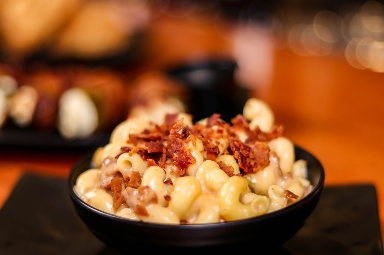

The first modern recipe for macaroni and cheese was included in Elizabeth Raffald's 1769 book, The Experienced English Housekeeper. Raffald's recipe is for a Béchamel sauce with cheddar cheese—a Mornay sauce in French cooking—which is mixed with macaroni, sprinkled with Parmesan, and baked until bubbly and golden.
Another recipe from 1784 stated that the small tubes of macaroni must be boiled, then drained in a sifter before being moved to a frying pan. Heavy cream is then added to the macaroni along with a "knob of butter" rolled in flour, and it must be cooked for five minutes before being transferred to a dish and topped with toasted Parmesan and pepper. Eliza Acton's Modern Cookery in All Its Branches (1845) has a similar recipe for macaroni and cheese, called "Macaroni a la Reine", which states that while the macaroni is being boiled to its tenderness, the cook must "dissolve gently ten ounces of any rich, well-flavoured white cheese in full three quarters of a pint of good cream; add a little salt, a rather full seasoning of cayenne, from half to a whole saltspoonful of pounded mace, and a couple of ounces of sweet fresh butter". The recipe goes on that "the maccaroni, previously well-drained, may then be tossed gently in it, or after it is dished, the cheese may be poured equally over the maccaroni" before being thickly covered with breadcrumbs "fried of a pale gold color, and dried perfectly, either before the fire or in an oven, when such an addition is considered an improvement."
Source: wikipedia.org

SocialButterflyMMG. Food and Cheese Lunch. 2019.
pixabay.com
Source: joyfoodsunshine.com